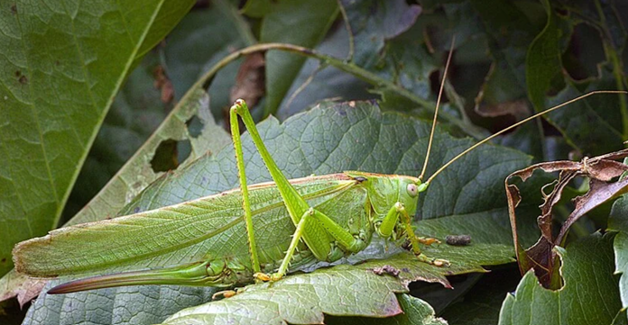

Es un insecto ortóptero conocido como esperanza, caracterizado por sus antenas largas y patas posteriores adaptadas para el salto. Generalmente presenta coloración verde, cuerpo alargado y alas que pueden parecerse a las hojas, lo que favorece su camuflaje entre la vegetación. Tiene hábitos principalmente nocturnos y se alimenta de material vegetal, como hojas y flores.